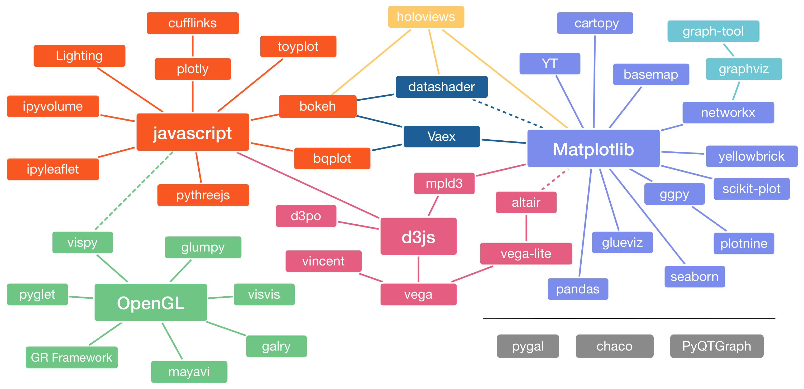

基于Python的开源可视化工具

信息可视化和科学可视化
-
信息可视化(InfoVis) visualizes arbitrary and potentially abstract types of information, typically in 2D or 2D+time plots with axes and numerical scales.
-
科学可视化(SciVis) focus on visualizing physically situated gridded data in 3D and 3D+time, often without spatial axes and instead providing an immersive visual experience of real-world physical datasets (see Weiskopf et al for a comparison).
-
Desktop-GUI targeted SciVis tools build on the OpenGL graphics standard, while browser-based web applications usually leverage the related WebGL graphics standard.
基于Matplotlib的信息可视化工具
- Strengths:
- Designed like MatLab: switching was easy
- Many rendering backends
- Can reproduce just about any plot with a bit of effort
- Well-tested, standard tool for over a decade
- Weaknesses:
- API is imperative & often overly verbose
- Sometimes poor stylistic defaults
- Poor support for web/interactive graphs
- Often slow for large & complicated data
基于Javascript信息可视化工具-Bokeh
- Strengths:
- Web view/interactivity
- Imperative and Declarative layer
- Handles large and/or streaming datasets
- Geographical visualization
- Fully open source
- Weaknesses:
- No vector output
- Newer tool with a smaller user-base than matplotlib
基于Javascript信息可视化工具-Plotly
- Strengths:
- Web view/interactivity
- Multi-language support
- 3D plotting capability
- Animation capability
- Geographical visualization
- Weaknesses:
- Some features require a paid plan
Bokeh vs. Plotly
- Use in Jupyter / iPython / scripts
- both frameworks do a good job for this use case.
- Use as a dashboard
- both frameworks are based on a producer-consumer architecture communicating over JSON
- Bokeh tends to have more layers of abstraction than Plotly
- both frameworks integrate with an existing Python-based web server
科学可视化工具
-
The Visualization Toolkit - VTK (from Kitware) supports manipulating and displaying scientific data by enabling 3D rendering, widgets for 3D interaction, and 2D plotting capability.
-
ParaView (from Kitware) is an application built on the Visualization Toolkit (VTK) with extensions for distributed computing. ParaView allows users to quickly build visualizations to analyze their data using qualitative and quantitative techniques. The data exploration can be done interactively in 3D or programmatically using batch processing capabilities.
-
Mayavi (from Enthought) is a general purpose, cross-platform tool for 3-D scientific data visualization.
-
VisPy is a high-performance interactive 2D/3D data visualization library leveraging the computational power of modern Graphics Processing Units (GPUs) through the OpenGL library to display very large datasets.
-
Glumpy is an OpenGL-based interactive visualization library in Python. Its goal is to make it easy to create fast, scalable, beautiful, interactive and dynamic visualizations.
-
PyVista is a streamlined interface for the Visualization Toolkit (VTK) providing 3D plotting and mesh analysis with NumPy support being at its core.
-
vedo is a lightweight module for scientific analysis and visualization of polygonal meshes, point clouds and volumetric data. It offers an intuitive API which can be combined with VTK seamlessly in a program.
-
itk-jupyter-widgets, based on the Visualization Toolkit for JavaScript vtk.js and the Insight Toolkit (ITK), provides interactive 3D widgets for Jupyter to visualize and analyze images, point sets, and meshes.
-
GR is a universal framework for cross-platform visualization applications. It offers developers a compact, portable and consistent graphics library for their programs.
-
yt is a package for analyzing and visualizing volumetric data. yt supports structured, variable-resolution meshes, unstructured meshes, and discrete or sampled data such as particles.
Communities
-
PyViz is an open platform for helping users decide on the best open-source (OSS) Python data visualization tools for their purposes, with links, overviews, comparisons, and examples.
-
HoloViz uses a wide range of open-source Python libraries, but focusing on the tools we help maintain as part of the HoloViz project: Panel, hvPlot, HoloViews, GeoViews, Datashader, Param, and Colorcet.
-
IEEEvis is the year’s premier forum for advances in theory, methods, and applications of visualization and visual analytics.
-
中国可视化与可视分析大会 (ChinaVis) 由我国可视化业界工作者联合发起，宗旨是促进中国及周边地区的可视化与可视分析研究与应用的交流，探讨在大数据时代可视化与可视分析发展的方向与机遇，推动相关研究与应用的发展与进步，推进学科的发展，促进人才培养和交流，加深艺术与技术融合。